Fourier Filtering
Lviv University
Introduction
Important
We need a more precise language to talk about the effect of linear filters, and the different image components, than to say “sharp” and “blurry” parts of the image.
The Fourier transform provides that precision.
Fourier transform
Frequencies
By analogy with temporal frequencies, which describe how quickly signals vary over time, a spatial frequency describes how quickly a signal varies over space.
The Fourier transform lets us describe a signal as:
- a sum of complex exponentials,
- each of a different spatial frequency.
Fourier transform
Linear filtering re-cap
Linear image transforms with the form \[ \mathbf{x} = \mathbf{H} \boldsymbol\ell_{\texttt{in}} \] can be thought of as a way of changing the initial pixels representation of \(\boldsymbol\ell_{\texttt{in}}\) into a different representation in \(\mathbf{x}\).
Note
We use \(\mathbf{x}\) to denote an intermediate representation.
- the representation might not be an image.
- a useful representation \(\mathbf{x}\) should have a number of interesting properties not immediately available in the original pixels of \(\boldsymbol\ell_{\texttt{in}}\).
Image Transforms
Inversion
This representation is specially interesting when it can be inverted so that the original pixels can be recovered:
\[ \boldsymbol\ell_{\texttt{in}}= \mathbf{H}^{-1} \mathbf{x}. \]
The Fourier transform is invertible.
Fourier Series
History
In 1822, French mathematician and engineer Joseph Fourier, as part of his work on the study on heat propagation, showed that any periodic signal could be written as an infinite sum of trigonometric functions (cosine and sine functions).
Fourier Series
Fourier’s birthplace
Fourier Series
Fourier representation
Any function, \(\ell(t)\) defined in the interval \(t \in (0,\pi)\), could be expressed as: \[ \ell(t) = a_1 \sin (t) + a_2 \sin (2t) + a_3 \sin (3t) + ...\]
The value of the coefficients \(a_n\) is computed as: \[ a_n = \frac{2}{\pi} \int_0^\pi \ell(t) \sin (nt) dt. \]
The sum is only guaranteed to converge to the function \(\ell(t)\) for \(t \in (0,\pi)\).
Properties
The resulting sum, for any values \(a_n\), is a periodic function with period \(2\pi\) and is anti-symmetric with respect to the origin, \(t=0\).
Fourier Series
Ramp signal expansion
One of Fourier’s original examples of sine series is the expansion of the ramp signal \[ \ell(t)=t/2. \] This series was first introduced by Euler. Fourier showed that his theory explained why a ramp could be written as the following infinite sum: \[ \frac{1}{2} t = \sin (t) - \frac{1}{2} \sin (2t) + \frac{1}{3} \sin (3t) - \frac{1}{4} \sin (4t) + ... \]
Fourier Series
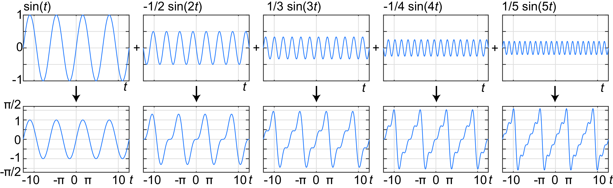Figure 1: Reconstruction of a ramp with the first five sine functions.
Fourier Series
Fourier series as a change of representation
It is useful to think of the Fourier series of a signal as a change of representation. 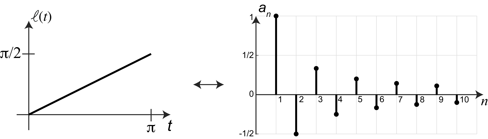
Fourier Series
As sums
Fourier series can also be written as sums of different sets of harmonic functions. For instance, using cosine functions we can describe the ramp function also as: \[\frac{1}{2} t = \frac{\pi}{4} - \frac{2}{\pi} \cos (t) - \frac{2}{3^2 \pi} \cos (3t) - \frac{2}{5^2 \pi} \cos (5t) - ...\] The cosine and sine series of the same function are only equal in the interval \(t \in (0, \pi)\), and result in different periodic extensions outside that interval.
Continuous and Discrete Waves
Continuous time sine wave
\[ s\left(t\right) = A \sin\left(w ~t - \theta \right) \]
- \(A\) is the amplitude
- \(w\) is the frequency
- \(\theta\) is the phase.
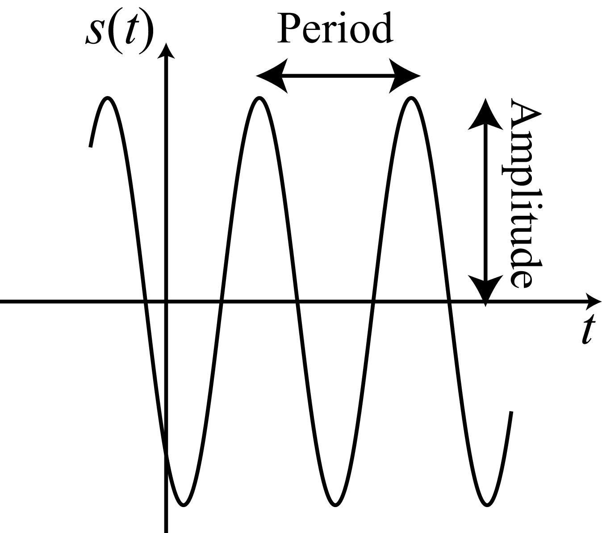
Continuous and Discrete Waves
Discrete time sine wave
\[ s\left[n\right] = A \sin\left(w ~n - \theta \right) \]
Continuous and Discrete Waves
Periodicity
The discrete sine wave will not be periodic for any arbitrary value of \(w\).
A discrete signal \(\ell\left[n\right]\) is periodic, if there exists \(T \in \mathbb{N}\) such that \(\ell\left[n\right] = \ell\left[n+mT\right]\) for all \(m \in \mathbb{Z}\).
For the discrete sine (and cosine) wave to be periodic the frequency has to be \(w = 2 \pi K / N\) for \(K,N \in \mathbb{N}\).
If \(K/N\) is an irreducible fraction, then the period of the wave will be \(T = N\) samples.
Continuous and Discrete Waves
Alternative notation
In general, to make explicit the periodicity of the wave we will use the form: \[s_k\left[n\right] = \sin\left( \frac{2 \pi}{N} \, k \, n \right)\]
The same applies for the cosine: \[ c_k\left[n\right] = \cos\left(\frac{2 \pi}{N} \,k\,n \right) \] When considering the set of periodic signals with period \(N\), or the set of signals with finite support signals of length \(N\) with \(n \in \left[0, N-1\right]\), \(k \in \left[1, N/2\right]\) denotes the frequency (i.e., the number of wave cycles that will occur within the region of support).
Continuous and Discrete Waves
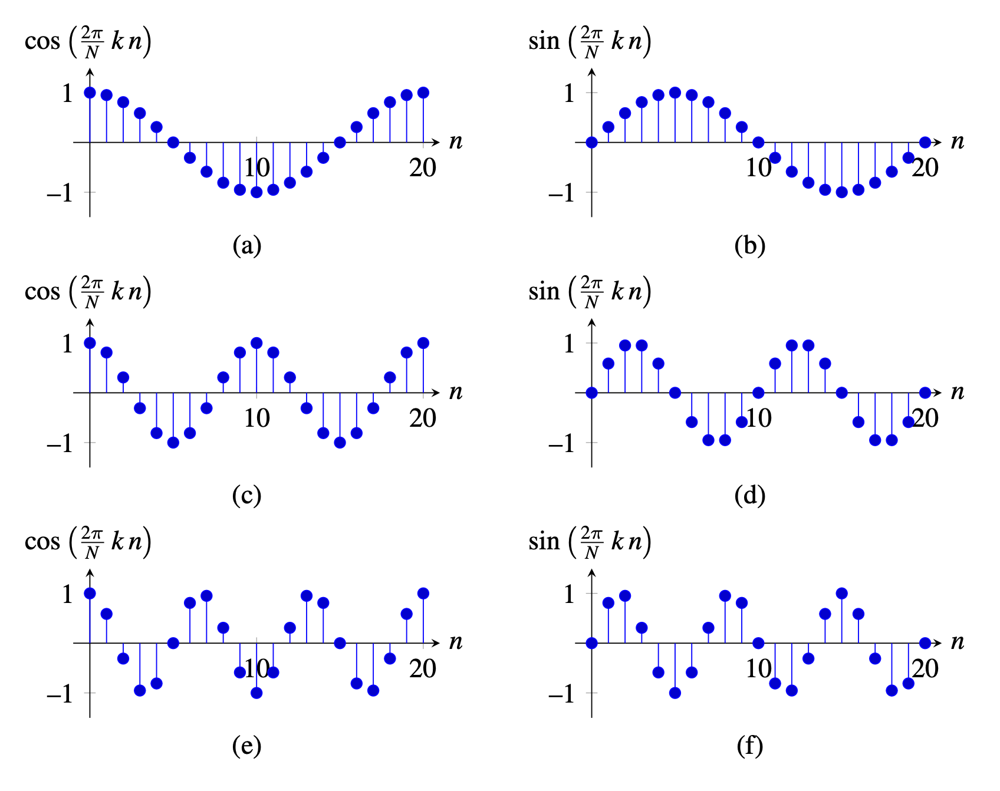Figure 2: \(A=1\) and \(N=20\), rows corresponding to \(k=1,2,3\). For \(k=3\) the samples for each oscillation are not identical, because \(3/20\) is an irreducible fraction.
Continuous and Discrete Waves
Sines and Cosines in 2D
\[ s_{u,v}\left[n,m\right] = A \sin \left(2 \pi \left( \frac{u\,n}{N} + \frac{v\,m}{M} \right) \right) \] \[ c_{u,v}\left[n,m\right] = A \cos \left(2 \pi \left( \frac{u\,n}{N} + \frac{v\,m}{M} \right) \right) \] where \(A\) is the amplitude and \(u\) and \(v\) are the two spatial frequencies and define how fast or slow the waves change along the spatial dimensions \(n\) and \(m\).
Continuous and Discrete Waves
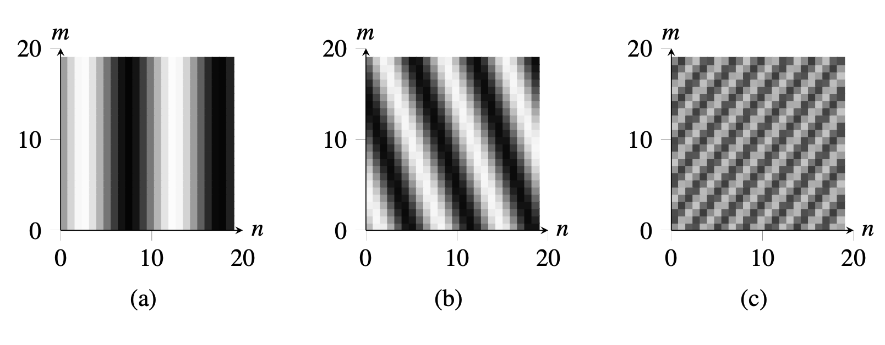Figure 3: 2D sine waves with \(N=M=20\). The frequency values are (a) \(u=2, v=0\); (b) \(u=3, v=1\); (c) \(u=7,v=-5\).
Continuous and Discrete Waves
Complex exponential waves
\[ e_{u}\left[n\right] = \exp \left(2 \pi j \frac{u\, n}{N} \right) \]
Complex exponentials are related to cosine and sine waves by Euler’s formula: \[ \exp \left(j a\right) = \cos (a) + j \sin (a) \qquad(1)\]
Continuous and Discrete Waves
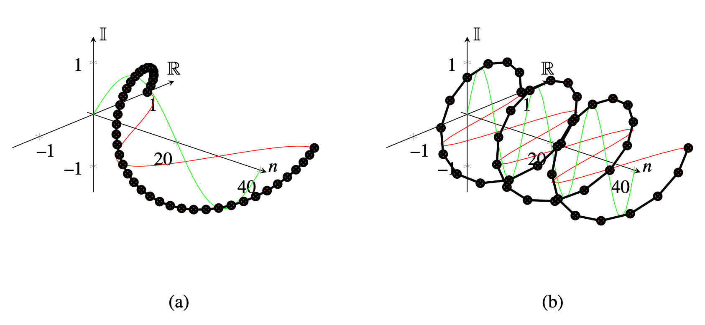Figure 4: Complex exponential wave with (a) \(N=40\), \(k=1\), \(A=1\); and (b) \(N=40\), \(k=3\), \(A=1\). The red and green curves show the real and imaginary waves. The black line is the complex exponential. The dots correspond to the discrete samples.
Continuous and Discrete Waves
Complex wave in 2D
\[ e_{u,v}\left[n,m\right] = \exp \left(2 \pi j \left( \frac{u\, n}{N} + \frac{v\,m}{M} \right) \right) \] where \(u\) and \(v\) are the two spatial frequencies.
Separability
Complex exponentials can be written as the product of two 1D signals: \[ e_{u,v}\left[n,m\right] = e_{u}\left[n\right] e_{v}\left[m\right] \]
Continuous and Discrete Waves
Orthogonal basis
Complex exponentials form an orthogonal basis for discrete signals and images of finite length. For images of size \(N \times M\), \[ \left<e_{u,v}, e_{u',v'} \right> = \sum_{n=0}^{N-1} \sum_{m=0}^{M-1} e_{u,v}\left[n,m\right] e^*_{u',v'}\left[n,m\right] = MN \delta \left[u-u'\right]\delta \left[v-v'\right] \] Therefore, any finite length discrete image can be decomposed as a linear combination of complex exponentials.
The Discrete Fourier Transform
Discrete Fourier Transform
The Discrete Fourier Transform (DFT) transforms an image \(\ell\left[n,m \right]\), of finite size \(N \times M\), into the complex image Fourier transform \(\mathscr{L}\left[u,v \right]\) as:
\[ \mathscr{L}\left[u,v \right] = \mathcal{F} \left\{ \ell\left[n,m \right] \right\} = \sum_{n=0}^{N-1} \sum_{m=0}^{M-1} \, \ell\left[n,m \right] \exp{ \left( -2\pi j \left( \frac{u\, n}{N} + \frac{v\, m}{M} \right) \right)} \qquad(2)\]
Relationship
We will call \(\mathscr{L}\left[u,v \right]\) the Fourier transform of \(\ell\left[m,n \right]\). We will often represent the relationship between the signal as its transform as: \[\ell\left[n,m \right] \xrightarrow{\mathscr{F}} \mathscr{L}\left[u,v \right]\]
The Discrete Fourier Transform
Inverse transform
By applying \(\frac{1}{MN} \sum\limits_{u=0}^{M-1} \sum\limits_{v=0}^{N-1}\) to both sides of equation (Equation 2) and exploiting the orthogonality between distinct Fourier basis elements, we find the inverse Fourier transform relation
\[ \ell\left[n,m \right] = \mathcal{F}^{-1} \left\{ \mathscr{L}\left[u,v \right] \right\} = \frac{1}{NM} \sum_{u=0}^{N-1} \sum_{v=0}^{M-1} \mathscr{L}\left[u,v \right] \exp{ \left(+2\pi j \left(\frac{u\, n}{N} + \frac{v\, m}{M} \right) \right) } \qquad(3)\]
The Discrete Fourier Transform
Image rewrite
- we rewrite the image, instead of as a sum of offset pixel values, as a sum of complex exponentials, each at a different frequency, called a spatial frequency for images because they describe how quickly things vary across space.
- from the inverse transform formula, we see that to construct an image from a Fourier transform, \(\mathscr{L}\left[u,v \right]\), we just add in the corresponding amount of that particular complex exponential (conjugated).
The Discrete Fourier Transform
Periodicity
As \(\mathscr{L}\left[u,v \right]\) is obtained as a sum of complex exponential with a common period of \(N,M\) samples, the function \(\mathscr{L}\left[u,v \right]\) is also periodic: \[ \mathscr{L}\left[u+aN,v+bM \right] = \mathscr{L}\left[u,v \right] \] for any \(a,b \in \mathbb{Z}\).
Also the result of the inverse DFT is a periodic image. Indeed you can verify from equation (Equation 3) that \[ \ell\left[n+aN,m+bM \right] = \ell\left[n,m \right] \] for any \(a,b \in \mathbb{Z}\).
The Discrete Fourier Transform
Equivalent representation
Using the fact that \(e_{N-u, M-v} = e_{-u,-v}\), another equivalent way to write for the Fourier transform is to sum over the frequency interval \(\left[-N/2, N/2\right]\) and \(\left[-M/2, M/2\right]\). This is especially useful for the inverse that can be written as: \[ \ell\left[n,m \right] = \frac{1}{NM} \sum_{u=-N/2}^{N/2} \sum_{v=-M/2}^{M/2} \mathscr{L}\left[u,v \right]\exp{ \left(+2\pi j \left(\frac{u\, n}{N} + \frac{v\, m}{M} \right) \right) } \qquad(4)\]
The Discrete Fourier Transform
Properties
- this formulation allows us to arrange the coefficients in the complex plane so that the zero frequency, or DC, coefficient is at the center.
- slow, large variations correspond to complex exponentials of frequencies near the origin
- frequencies further away from the origin represent faster variation with movement across space
- if the amplitudes of the complex conjugate exponentials are the same, then their sum will represent a cosine wave; otherwise, a sine wave
Uniqueness
One very important property is that the decomposition of a signal into a sum of complex exponentials is unique: there is a unique linear combination of the exponentials that will result in a given signal.
The Discrete Fourier Transform
Matrix Form of the Fourier Transform
As the DFT is a linear transform we can also write the DFT in matrix form, with one basis per row. In 1D, the matrix for the DFT is as follows:
\[\mathbf{F} = \begin{bmatrix}1 & 1 & 1 & \dots & 1\\ %u=0 1 & \exp{ \left(-2\pi j \frac{1}{N} \right)} & \exp{ \left(-2\pi j \frac{2}{N} \right)} & \dots & \exp{ \left(-2\pi j \frac{N-1}{N} \right)}\\ %u=1 1 & \exp{ \left(-2\pi j \frac{2}{N} \right)} & \exp{ \left(-2\pi j \frac{4}{N} \right)} & \dots & \exp{ \left(-2\pi j \frac{2\, (N-1)}{N} \right)}\\ %u=2 \vdots & \vdots & \vdots & ~ & \vdots \\ 1 & \exp{ \left(-2\pi j \frac{(N-1)}{N} \right)} & \exp{ \left(-2\pi j \frac{(N-1)\, 2}{N} \right)} & \dots & \exp{ \left(-2\pi j \frac{(N-1)\, (N-1)}{N} \right)}\ \end{bmatrix}\]
The Discrete Fourier Transform
Matrix Form
- \(\mathbf{F}\) is a symmetric matrix
- the inverse of the DFT is the complex conjugate: \(\mathbf{F}^{-1} = \mathbf{F}^{*}\).
The Discrete Fourier Transform
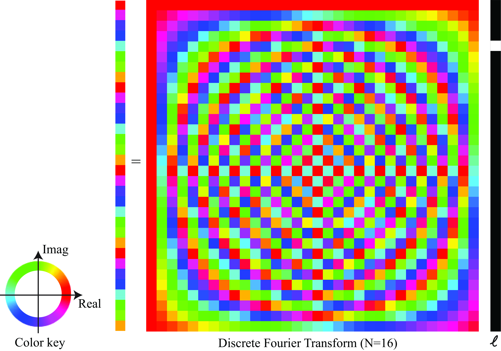Figure 5: Visualization of the discrete Fourier transform as a matrix. The signal to be transformed forms the entries of the column vector at right.
The Discrete Fourier Transform
DFT Decomposition
- using the real and imaginary components: \[ \mathscr{L}\left[u,v \right] = Re \left\{\mathscr{L}\left[u,v \right] \right\} + j \, Imag \left\{\mathscr{L}\left[u,v \right] \right\} \]
- using a polar decomposition: \[ \mathscr{L}\left[u,v \right] = A \left[u,v \right] \, \exp{\left( j \, \theta\left[u,v \right] \right)} \]
The Discrete Fourier Transform
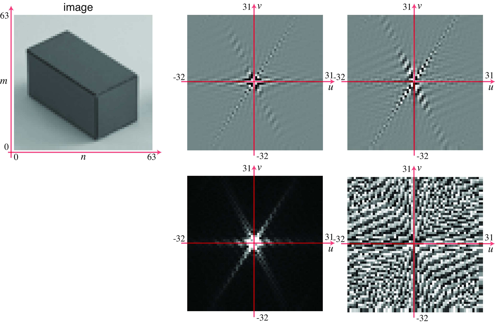Figure 6: DFT of an image and visualization of (top) the real and imaginary components, and (bottom) the amplitude and phase of the Fourier transform.
The Discrete Fourier Transform
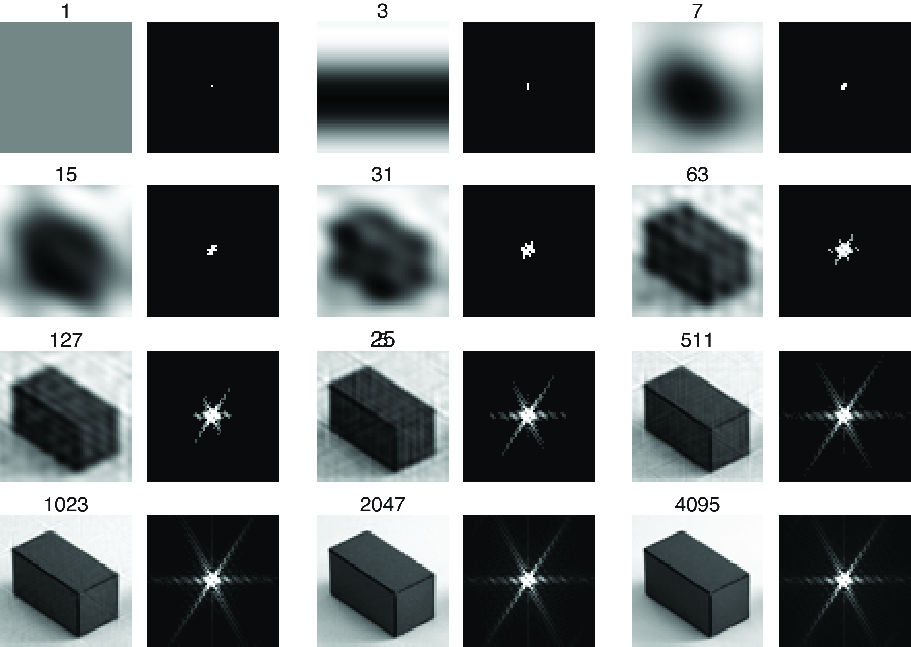Figure 7: Reconstructing an image from the \(N\) Fourier coefficients of the largest amplitude. The right frame shows the location, in the Fourier domain, of the \(N\) Fourier coefficients, which when inverted, give the image at the left.
Useful Transforms
Delta Distribution
The Fourier transform of the delta function \(\delta \left[n,m \right]\) is \[ \mathcal{F} \left\{ \delta \left[n,m \right] \right\} = \sum_{n=0}^{N-1} \sum_{m=0}^{M-1} \, \delta \left[n,m \right] \exp{ \left( -2\pi j \left( \frac{u\, n}{N} + \frac{v\, m}{M} \right) \right)} = 1 \] where the Fourier transform of the delta signal is 1: \[ \delta \left[n,m \right] \xrightarrow{\mathscr{F}} 1. \]
Useful Transforms
Inverse for delta
If we think in terms of the inverse Fourier transform, this means that if we sum all the complex exponentials with a coefficient of 1, then all the values will cancel but the one at the origin, which results in a delta function: \[ \delta \left[n,m \right] = \frac{1}{NM} \sum_{u=-N/2}^{N/2} \sum_{v=-M/2}^{M/2} \exp{ \left(2\pi j \left(\frac{u\, n}{N} + \frac{v\, m}{M} \right) \right) } \]
Useful Transforms
Cosine and Sine Waves
The Fourier transform of the cosine wave, \(\cos{ \left( 2\pi \left( \frac{u_0\, n}{N} + \frac{v_0\, m}{M} \right) \right) }\), is: \[ \begin{aligned} \sum_{n=0}^{N-1} \sum_{m=0}^{M-1} \, \cos{ \left( 2\pi \left( \frac{u_0 \, n}{N} + \frac{v_0 \, m}{M} \right) \right) } \exp{ \left( -2\pi j \left( \frac{u\, n}{N} + \frac{v\, m}{M} \right) \right)} = \\ =\frac{1}{2} \left( \delta \left[u-u_0, v-v_0 \right] + \delta \left[u+u_0, v+v_0 \right] \right) \end{aligned} \]
Useful Transforms
Fourier transform relationship
\[ \cos{ \left( 2\pi \left( \frac{u_0\, n}{N} + \frac{v_0\, m}{M} \right) \right) } \xrightarrow{\mathscr{F}} \frac{1}{2} \left( \delta \left[u-u_0, v-v_0 \right] + \delta \left[u+u_0, v+v_0 \right] \right) \]
And for the sine wave: \(\sin{ \left( 2\pi \left( \frac{u_0\, n}{N} + \frac{v_0 m}{M} \right) \right) }\): \[ \sin{ \left( 2\pi \left( \frac{u_0\, n}{N} + \frac{v_0 m}{M} \right) \right) } \xrightarrow{\mathscr{F}} \frac{1}{2j} \left( \delta \left[u-u_0, v-v_0 \right] - \delta \left[u+u_0, v+v_0 \right]\right) \]
Useful Transforms
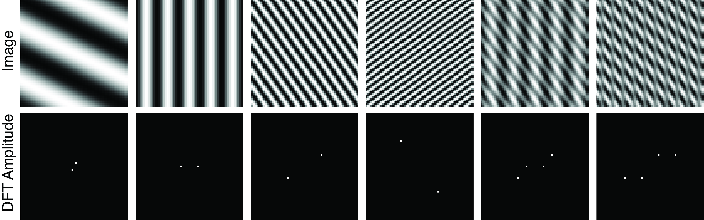Figure 8: Some 2D Fourier transform pairs. Images are \(64 \times 64\) pixels. The waves are cosine with frequencies \((1,2)\), \((5,0)\), \((10,7)\), \((11,-15)\). The last two examples show the sum of two waves and the product.
Useful Transforms
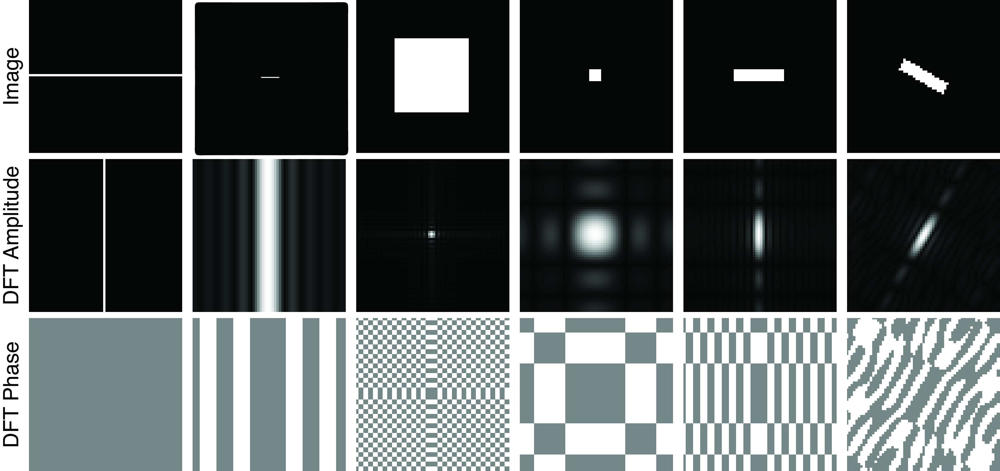Figure 9: Some two-dimensional Fourier transform pairs. Note the trends visible in the collection of transform pairs: As the support of the image in one domain gets larger, the magnitude in the other domain becomes more localized. A line transforms to a line oriented perpendicularly to the first. Images are \(64 \times 64\) pixels, origin is in the center. Depicted signals are symmetric. All these images except for the last are separable.
Useful Transforms
Box Function
The box function is defined as follows: \[ \text{box}_{L} \left[n \right] = \begin{cases} 1 & \quad \text{if } -L \leq n \leq L \\ 0 & \quad \text{otherwise.} \end{cases} \] The duration of the box is \(2L+1\).
Box function for \(L=5\) and \(N=32\).
Useful Transforms
DFT for finite length box function
\[ \begin{aligned} \mathcal{F} \left\{ \text{box}_{L} \left[n \right] \right\} &=& \sum_{n=0}^{N-1} \, \text{box}_{L} \left[n \right] \exp{ \left( -2\pi j \frac{u\, n}{N} \right)} \\ &=& \sum_{n=-L}^{L} \, \exp{ \left( -2\pi j \frac{u\, n}{N} \right)} \end{aligned} \qquad(5)\]
We can use the equation of the sum of a geometric series: \[ \sum_{n=-L}^{L} a^n = a^{-L} \sum_{n=0}^{2L} a^n = a^{-L} \frac{1-a^{2L+1}}{1-a} = \frac{a^{-(2L+1)/2}-a^{(2L+1)/2}}{a^{-1/2}-a^{1/2}} \] where \(a\) is a constant. With \(a = \exp{ \left( -2\pi j \frac{u}{N} \right)}\) we can write the sum in equation (Equation 5) as
\[ \begin{aligned} \sum_{n=-L}^{L} \, \exp{ \left( -2\pi j \frac{u\, n}{N} \right)} &= \frac{\exp{ \left( \pi j \frac{u(2L+1)}{N} \right)} - \exp{ \left( -\pi j \frac{u(2L+1)}{N} \right)}} {\exp{ \left( \pi j \frac{u}{N} \right)} - \exp{ \left( - \pi j \frac{u}{N} \right)} } \\ &= \frac{\sin \left( \pi u(2L+1)/N \right)}{\sin \left( \pi u/N \right)} \end{aligned} \qquad(6)\]
Useful Transforms
DFT for finite length box function
\[ \text{box}_{L} \left[n \right]\xrightarrow{\mathscr{F}} \frac{\sin \pi u (2L+1)/N}{\sin \pi u/N} \]
Discrete sinc function
The discrete sinc function sincd is defined as follows: \[ \text{sincd}(x;a) = \frac{\sin(\pi x)}{a \sin (\pi x/a)} \] Where \(a\) is a constant. This is a symmetrical periodic function with a maximum value of 1.
Useful Transforms
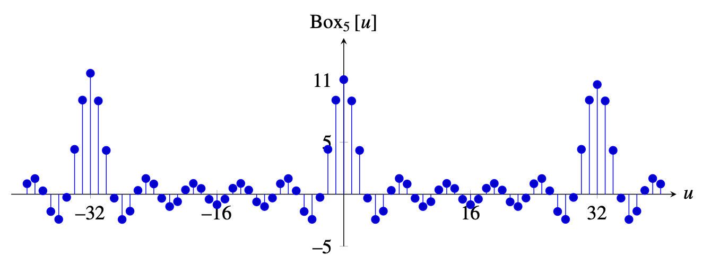Figure 10: DFT of the box filter with \(L=5\), and \(N=32\).
Useful Transforms
2D case
A 2D box is a separable function: \[\text{box}_{L_n, L_m} \left[n,m\right] = \text{box}_{L_n} \left[n\right] \text{box}_{L_m}\left[m\right] \] The DFT is the product of the two DFTs: \[ \text{Box}_{L_n, L_m} \left[ u,v \right] = \text{Box}_{L_n} \left[ u\right] \text{Box}_{L_m} \left[ v\right]. \]
DFT Properties
| \(\ell[n]\) | \(\mathscr{L}[u]\) |
|---|---|
| \(\ell_1[n] \circ \ell_2[n]\) | \(\mathscr{L}_1[u] \mathscr{L}_2[u]\) |
| \(\ell_1[n] \ell_2[n]\) | \(\frac{1}{N} \mathscr{L}_1[u] \circ \mathscr{L}_2[u]\) |
| \(\ell\left[n-n_0\right]\) | \(\mathscr{L}[u] \exp \left(-2 \pi j \frac{u n_0}{N}\right)\) |
| \(\delta[n]\) | 1 |
| \(\exp \left(2 \pi u_0 \frac{n}{N}\right)\) | \(\delta\left[u-u_0\right]\) |
| \(\cos \left(2 \pi u_0 \frac{n}{N}\right)\) | \(\frac{1}{2}\left(\delta\left[u-u_0\right]+\delta\left[u+u_0\right]\right)\) |
| \(\sin \left(2 \pi u_0 \frac{n}{N}\right)\) | \(\frac{1}{2 j}\left(\delta\left[u-u_0\right]-\delta\left[u+u_0\right]\right)\) |
| \(\operatorname{box}_L[n]\) | \(\frac{\sin \pi u(2 L+1) / N}{\sin \pi u / N}\) |
Discrete Fourier Transform Properties
Linearity
The Fourier transform and its inverse are linear transformations: \[ \alpha \ell_1 \left[n,m \right] + \beta \ell_2 \left[ n,m \right] \xrightarrow{\mathscr{F}} \alpha \mathscr{L}_1 \left[u,v \right] + \beta \mathscr{L}_2 \left[ u,v \right] \] where \(\alpha\) and \(\beta\) are complex numbers.
Separability
An image is separable if it can be written as the product of two 1D signals, \[ \ell\left[n,m \right] = \ell_1\left[n \right] \ell_2\left[m \right]. \] If an image is separable, then its Fourier transform is separable: \[ \mathscr{L}\left[u,v \right] = \mathscr{L}_1 \left[u \right] \mathscr{L}_2 \left[v \right]. \]
DFT Properties
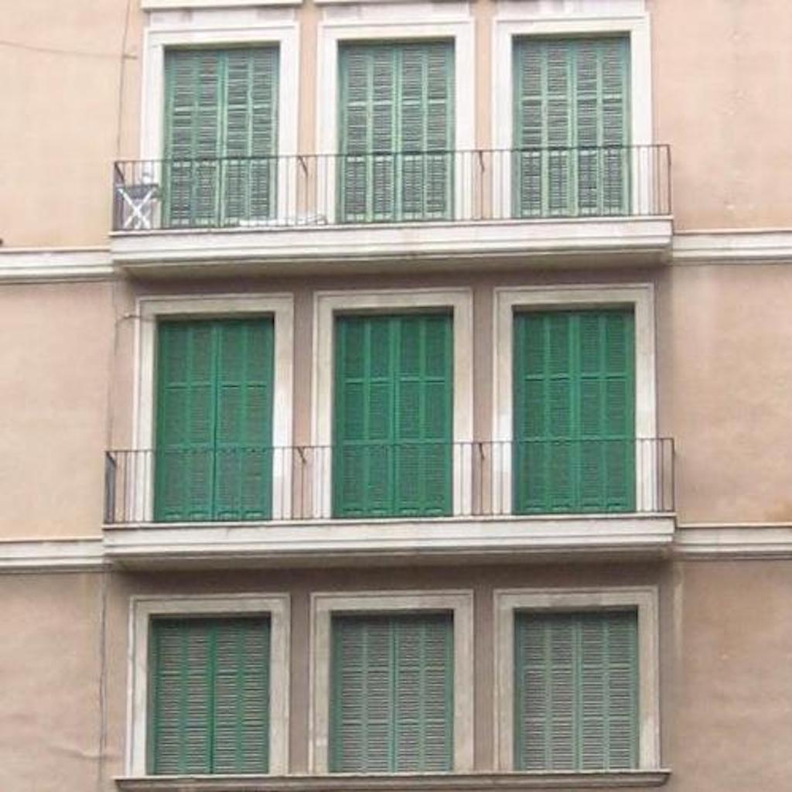
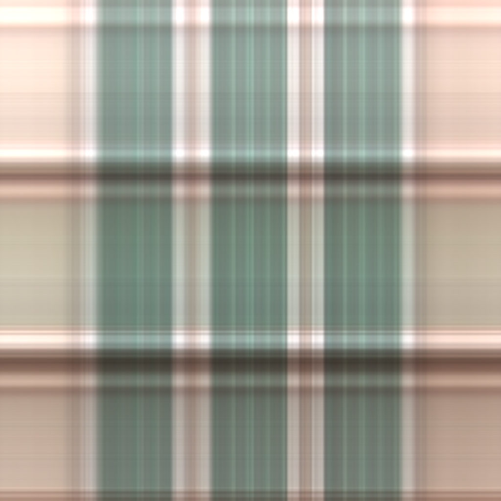
DFT Properties
Parseval’s Theorem
Preservation of the dot product between two signals and the norm of a vector after the basis change (up to a constant factor): \[\sum_{n=0}^{N-1} \sum_{m=0}^{M-1} \, \ell_1 \left[n,m \right] \ell_2^* \left[n,m \right] = \frac{1}{NM}\sum_{u=0}^{N-1} \sum_{v=0}^{M-1} \, \mathscr{L}_1 \left[u,v \right] \mathscr{L}_2^* \left[u,v \right]\]
Plancherel theorem
If \(\ell_1=\ell_2\), this reduces to: \[ \sum_{n=0}^{N-1} \sum_{m=0}^{M-1} \, \| \ell\left[n,m \right] \|^2 = \frac{1}{NM}\sum_{u=0}^{N-1} \sum_{v=0}^{M-1} \, \| \mathscr{L}\left[u,v \right] \|^2 \]
DFT Properties
Convolution
Consider: \[ \ell_{\texttt{out}}= \ell_1 \circ \ell_2 \]
\[ \begin{split} \mathscr{L}_{\texttt{out}}\left[u,v \right] & = \mathcal{F} \left\{ \ell_1 \circ_{N,M} \ell_2 \right\} \\ & = \sum_{n=0}^{N-1} \sum_{m=0}^{M-1} \left\{ \sum_{k=0}^{N-1} \sum_{l=0}^{M-1} \ell_1 \left[n-k, m-l \right] \ell_2 \left[k,l \right] \right\} \exp \left(-2 \pi j \left(\frac{nu}{N} + \frac{mv}{M} \right) \right) \end{split} \] Introducing \(n' = n - k\) and \(m' = m - l\), we have: \[ \mathscr{L}_{\texttt{out}}\left[u,v \right] = \sum_{k=0}^{N-1} \sum_{l=0}^{M-1} \ell_2 \left[k,l \right] \sum_{n'=-k}^{N-k-1} \sum_{m'=-l}^{M-l-1} \ell_1 \left[n', m' \right]\times \\ \times \exp{ \left(-2 \pi j \left(\frac{(n'+k)u}{N} + \frac{(m'+l)v}{M} \right) \right)} \]
DFT Properties
Convolution
Recognizing that the last two summations give the DFT of \(x\left[n,m\right]\), using circular boundary conditions, gives \[ \mathscr{L}_{\texttt{out}}\left[u,v \right] = \sum_{k=0}^{N-1} \sum_{l=0}^{M-1} \mathscr{L}_1 \left[u,v\right] \exp{ \left(-2 \pi j \left(\frac{ku}{N}+\frac{lv}{M} \right ) \right)} \ell_2 \left[k,l\right]. \] Performing the DFT indicated by the second two summations gives: \[ \mathscr{L}_{\texttt{out}}\left[u,v\right] = \mathscr{L}_1 \left[u,v\right] \mathscr{L}_2 \left[u,v\right] \]
Therefore: \[ \ell_1 \left[n,m\right] \circ_{N,M} \ell_2 \left[n,m\right] \xrightarrow{\mathscr{F}} \mathscr{L}_1 \left[u,v\right] \mathscr{L}_2 \left[u,v\right] \]
Discrete Fourier Transform Properties
Convolution
Because the Fourier bases are the eigenfunctions of all space invariant linear operators, if you start with a complex exponential, and apply any linear, space invariant operator to it, you always come out with a complex exponential of that same frequency, but, in general, with some different amplitude and phase.
This property lets us examine the operation of a filter on any image by examining how it modulates the Fourier coefficients of any image.
Discrete Fourier Transform Properties
Dual Convolution
The Fourier transform of the product of two images is the (circular) convolution of their DFTs:
\[ \ell_1 \left[n,m\right] \ell_2 \left[n,m\right] \xrightarrow{\mathscr{F}} \frac{1}{NM} \mathscr{L}_1 \left[u,v\right] \circ \mathscr{L}_2 \left[u,v\right] \]
Discrete Fourier Transform Properties
Shift (Translation in space)
When displacing the image by \((n_0, m_0)\) pixels, we get \(\ell\left[n-n_0,m-m_0 \right]\) and its Fourier transform is: \[ \begin{split} \mathcal{F} \left\{ \ell\left[n-n_0,m-m_0 \right] \right\} &= \sum_{n=0}^{N-1} \sum_{m=0}^{M-1} \, \ell\left[n-n_0,m-m_0 \right] \exp{ \left( -2\pi j \left( \frac{u\, n}{N} + \frac{v\, m}{M} \right) \right)} = \\ & = \sum_{n=0}^{N-1} \sum_{m=0}^{M-1} \, \ell\left[n,m \right] \exp{ \left( -2\pi j \left( \frac{u\, (n+n_0)}{N} + \frac{v\, (m+m_0)}{M} \right) \right)} = \\ & = \mathscr{L}\left[u,v \right] \exp{ \left( -2\pi j \left( \frac{u\, n_0}{N} + \frac{v\, m_0}{M} \right) \right)} \end{split} \qquad(7)\]
DFT Properties
Shift (Translation in space)
DFT Properties
Modulation (Translation in frequency)
If we multiply an image with a complex exponential, its FT is translated:
\[ \ell\left[n,m \right] \exp{ \left( -2\pi j \left( \frac{u_0\, n}{N} + \frac{v_0\, m}{M} \right) \right)}\xrightarrow{\mathscr{F}}\mathscr{L}\left[u-u_0,v-v_0 \right] \qquad(8)\]
A related relationship is as follows:
\[ \ell\left[n,m \right] \cos{ \left( 2\pi j \left( \frac{u_0\, n}{N} + \frac{v_0\, m}{M} \right) \right)}\xrightarrow{\mathscr{F}} \mathscr{L}\left[u-u_0,v-v_0 \right] + \mathscr{L}\left[u+u_0,v+v_0 \right] \]
DFT Properties
Modulation (Translation in frequency)
A Family of Fourier Transforms
Fourier Transform for Continuous Signals
\[ \mathscr{L}(w) = \int_{-\infty}^{\infty} \ell(t) \exp{ \left( - j w t \right)} \, dt \qquad(9)\]
Inverse Fourier Transform for Continuous Signals
\[ \ell(t) = \frac{1}{2 \pi} \int_{-\infty}^{\infty} \mathscr{L}(w) \exp{ \left( j w t \right) } \, dw \qquad(10)\]
Convolution between Continuous Signals
\[ \ell_{\texttt{out}}(t) = \ell_1 \circ \ell_2 = \int_{-\infty}^{\infty} \ell_1 (t-t') \ell_2(t') \, d t' \qquad(11)\]
A Family of Fourier Transforms
Fourier Transform for Infinite Length Discrete Signals
By replacing \(w = 2 \pi u / N\) in equation (Equation 2), we can write: \[ \mathscr{L}(w) = \sum_{n=-\infty}^{\infty} \ell\left[n \right] \exp{(- j w n)} \] The frequency \(w\) is now a continuous variable. The Fourier transform \(\mathscr{L}(w)\) is a periodic function with period \(2 \pi\).
Inverse Fourier Transform for Infinite Length Discrete Signals
\[ \ell\left[n \right] = \frac{1}{2\pi} \int_{2 \pi} \mathscr{L}(w) \exp{(j w n)} d w \] where the integral is done only in one of the periods.
A Family of Fourier Transforms
| Time Domain | FT | FT\(^{-1}\) | Frequency Domain |
|---|---|---|---|
| Discrete time, Finite length (\(N\)) | \(\mathscr{L} \left[u \right] = \sum_{n=0}^{N-1} \ell \left[n \right] e^{-2 \pi j \frac{un}{N}}\) | \(\ell \left[n \right] = \frac{1}{N} \sum_{u=0}^{N-1} \mathscr{L} \left[u \right] e^{2 \pi j \frac{un}{N} }\) | Discrete frequency, Finite length (\(N\)) |
| Continuous time, Infinite length | \(\mathscr{L} (w) = \int_{- \infty}^{\infty} \ell (t) e^{- j w t} dt\) | \(\ell (t) = \frac{1}{2\pi} \int_{- \infty}^{\infty} \mathscr{L} (w) e^{j w t} d w\) | Continuous frequency, Infinite length |
| Discrete time, Infinite length | \(\mathscr{L} (w) = \sum_{n=-\infty}^{\infty} \ell \left[n \right] e^{- j w n}\) | \(\ell \left[n \right] = \frac{1}{2\pi} \int_{2 \pi} \mathscr{L} (w) e^{j w n} d w\) | Continuous frequency, Finite length (\(2 \pi\)) |
FT as an Image Representation
Representation
The Fourier transform of an image can be written in polar form: \[\mathscr{L}\left[u,v \right] = A \left[u,v \right] \, \exp{\left( j\, \theta\left[u,v \right] \right)}\] where \(A \left[u,v \right] = \left| \mathscr{L}\left[u,v \right] \right|\) and \(\theta \left[u,v \right] = \angle \mathscr{L}\left[u,v \right]\).
- \(A \left[u,v \right]\) gives the strength of the weight for each complex exponential: intensity scaling.
- the phase \(\theta \left[u,v \right]\) translates the complex exponential: location information.
FT as an Image Representation
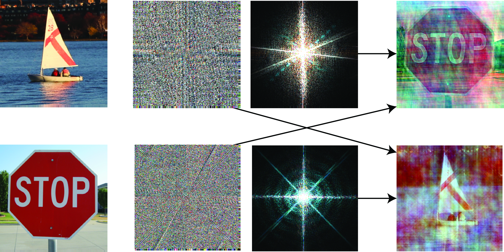Figure 13: Swapping the amplitude and the phase of the Fourier Transform of two images. Each color channel is processed in the same way.
FT as an Image Representation
Important
Magnitude of the DFT of natural images is quite similar and can be approximated by \[ A \left[u,v \right] = a/ (u^2+v^2)^b \] with \(a\) and \(b\) being two constants.
FT as an Image Representation
Amplitude intuition
The amplitude is great for capturing images that contain strong periodic patterns. Experiment:
- compute the Fourier transform of an image
- create two images by applying the inverse FT when removing one of the components while keeping the other original component
- for the amplitude image, we will randomize the phase
- for the phase image, we will replace the amplitude by a noninformative \(A \left[u,v \right] = 1/(u^2+v^2)^{1/2}\) for all images (better than random).
FT as an Image Representation

Figure 14: The relative importance of phase and amplitude depends on the image.
FT as an Image Representation

Figure 15: The Fourier transform matching game: Match each image (a-h) with its corresponding Fourier transform magnitude (1-8).
Fourier Analysis of Linear Filters
Linear filters as convolutions:
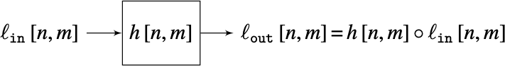
where \(h \left[n,m \right]\) is the impulse response of the system, or convolution kernel.
Linear filters as products in Fourier domain
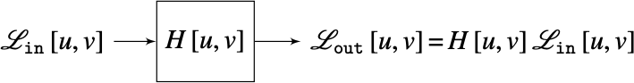
The function \(H \left[u, v \right]\) is called the transfer function of the filter.
Fourier Analysis of Linear Filters
Polar form
\[ H \left[u,v \right] = \left|H \left[u, v \right] \right| \exp \left( {j \, \angle H \left[u, v \right]} \right) \qquad(12)\]
- the magnitude \(\left| H \left[u, v \right] \right|\) is the amplitude gain
- the phase \(\angle H \left[u, v \right]\) is the phase shift
- the magnitude at the origin, \(\left| H \left[0, 0 \right] \right|\), is the DC gain of the filter
- the average value of the output signal is equal to the average value of the input times the DC gain.
Fourier Analysis of Linear Filters
Filters as frequency blockers
Filters are many times classified according to the frequencies that they let pass through the filter.
Fourier Analysis of Linear Filters
Fourier Analysis of Linear Filters
Example 1: Removing the Columns from the MIT Building
Fourier Analysis of Linear Filters
Example 2: The Human Visual System and the Contrast Sensitivity Function
Visual psychophysics is an experimental science that studies the relationship between real world stimuli and our perception.
The concept of psychophysics was introduced by Gustav Theodor Fechner (1801–1887).
Fourier Analysis of Linear Filters
Example 2: The Human Visual System and the Contrast Sensitivity Function
When the input to a linear system is a wave of frequency \(u_0\) and amplitude 1, the output is another wave of the same frequency as the input but with an amplitude equal to \(|H \left[ u_0 \right]|\):
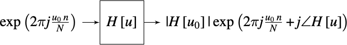
This means that one way of identifying the transfer function of a system is by using as input a wave and measuring the output amplitude as a function of the input frequency \(u_0\). This inspired a generation of psychophysicists to study how the human visual system behaved when presented with periodic signals.
Fourier Analysis of Linear Filters
Example 2: The Human Visual System and the Contrast Sensitivity Function
To experience the transfer function of our own visual system, let’s build the following \(N \times M\) image: \[ \ell\left[n,m\right] = A\left[m\right] \sin(2 \pi f\left[n\right] n/N) \] with \[ A\left[m\right] = A_{min} \left(\frac{A_{max}}{A_{min}}\right)^{m/M} \] and \[ f\left[n\right] = f_{min} \left(\frac{f_{max}}{f_{min}}\right)^{n/N} \]
Fourier Analysis of Linear Filters
Example 2: The Human Visual System and the Contrast Sensitivity Function
- an amplitude \(A\left[m\right]\), varies along the vertical dimension \(m\);
- a wave with a frequency, \(f\left[n\right]\), that varies along the horizontal component, \(n\);
- the frequency function \(f\left[n\right]\), is defined as an increasing function that starts from \(f_{min}=1\) and grows up to \(f_{max}=60\).
Fourier Analysis of Linear Filters
Example 2: The Human Visual System and the Contrast Sensitivity Function
- our visual system is nonlinear: photo-receptors compute the \(\log\) of the incoming intensity (approximately).
- acts like a band-pass filter: you are sensitive to middle spatial frequencies (peaking around 6 cycles/degree) and less sensitive to very low spatial frequencies (on the left of the image) and high spatial frequencies (on the right of the image).
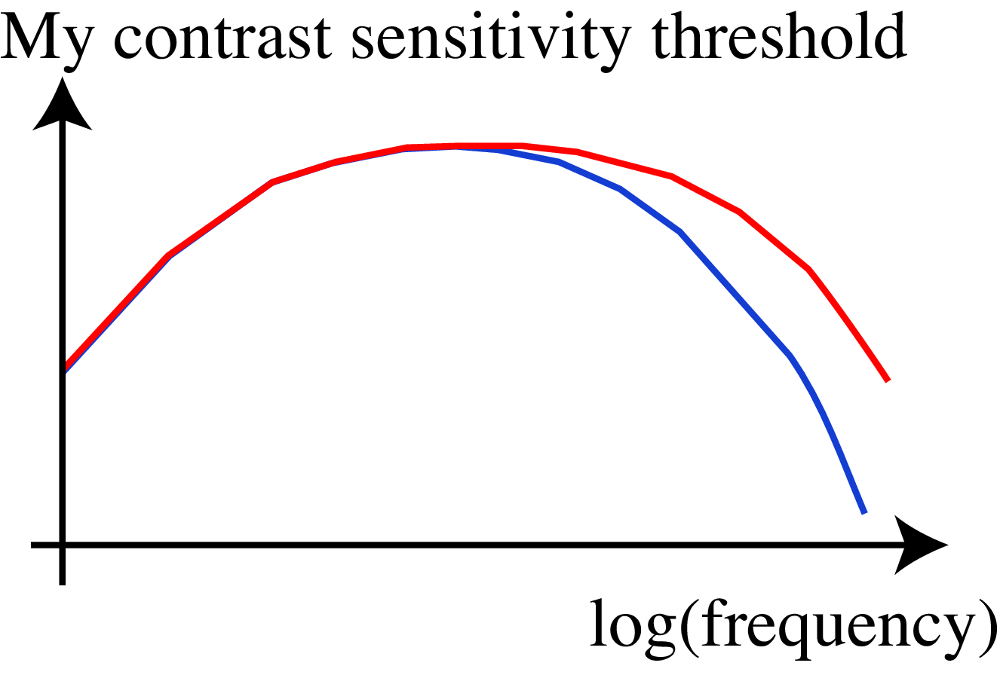
Concluding Remarks
Features
- easy to analyze images according to spatial frequency representation
- FT is too global! Every sinusoidal component covers the entire image.
- FT tells us a little about what is happening in the image (based on the spatial frequency content)
- FT tells us nothing about where it is happening.